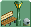
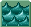
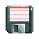

Content Browser
 Features
Features
Author: Robert Jordan
Version: v1.3.0.3
RCT2 Content Browser is a more advanced program originally designed to replace DatChecker.
With this you can easily browse and manage all content in your RCT2 directory.
RCT2CB not only shows you a visual representation of the object, but all of it's information and data as well.
This makes the tool useful for Studying RCT2 file types.
All variables and flags listed in the info tab have information on them in the source code.
Please note that not all objects are 100% accurately displayed in the view window.


Tabs
 Settings
Settings
 Attractions
Attractions
 Small Scenery
Small Scenery
 Large Scenery
Large Scenery
 Walls
Walls
 Signs
Signs
 Paths
Paths
 Scenery Groups
Scenery Groups
 Park Entrances
Park Entrances
Info
Shows all the information about the object header and other data structures in the file. Most of the information is low level which means you may not understand it.
SettingsAll Types
AttractionsSmall SceneryLarge SceneryWallsSignsPathsPath Additions
Scenery GroupsPark EntrancesWater
 Controls
Controls
 Rotate
RotateRotate the object or change the path pattern.
 Slope
SlopeChange the slope for applicable objects.
 Special
SpecialChange the corner for applicable small scenery objects, change between queue and normal paths, or change the car type of the attraction.
 Elevate
ElevateElevate the path to show supports and railings.

 Change Object
Change ObjectChange the currently selected object.

 Change Frame
Change FrameChange the current image being viewed in image mode or change the current frame being viewed.
 Dialog View
Dialog ViewChanges the view to dialog view.
Image View
Changes the view to individual images in the file.
 Browse
BrowseChange the current directory to scan objects from.
 Scan
ScanScan objects from the current directory and load then into the Content Browser.
Drag Object from List
Allows you to copy the object and place it in the dropped location.
Delete Key
Will delete the selected objects in the last used list if Allow Deletions is enabled.
Open With
Opening a dat file with RCT2 Content Browser will automatically load the object without having to scan for it.
 Settings
Settings
Default Directory
The default directory to use for RCT2 object data. Make sure to use the ObjData folder and not the Data folder.
Objects Per Tick
Changes how many objects are loaded inbetween pauses. More objects will make the program run slower until fully loaded and less objects will make the loading take longer.
Quick Load Attractions
Only allows attractions to load 35 images. This is useful when browsing attractions as many of them can have thousands of images, which will take awhile to load.
Remap Image View
When in image view, the remap option will be available.
Allow Deletions
Enables the delete key, allowing users to delete objects from the list that they no longer want. Objects without a Custom source cannot be deleted for safetey reasons.
Backup Deletions
All deleted object files will be sent to a folder in the executable directory.
Extract Images
Extracts all images and palettes in the object file into a folder in the executable directory.
Open Directory
Opens the executable directory making it easier to access extracted images and deleted object files.
Save
Saves the settings to Settings.xml.
Download

{kind=link}
{kind=link}
 Donate
Donate
Click here to make a donation to Trigger's RCT2 Tools. Your support means a lot.